קאפיטל 18
נויטפאל סיטואציעס
זייטן 284–301 אינעם PDF
די ערשטע דריי שריט
כמעט יעדע נויט-פראצעדור אינעם אונער'ס מאנואל הייבט זיך אן אויפן זעלבן אופן: פאמעלעך און גלאט אראפגיין מיט דער גיכקייט, אפשטעלן אויף א זיכערן ארט, און אנצינדן די האזארד ליכט. ערשט דערנאך נעמט מען זיך צו צום פראבלעם אליין, צי עס איז א פלאטער טייער, א טויטע באטעריע, א רויט ליכטל אויפן מיטער, אדער א טיר וואס וויל זיך נישט עפענען. אלעס אין דעם קאפיטל איז א זיכערע פראצעדור פאר א געווענליכן אייגנטימער, גענומען פונעם מאנואל. אויב א שריט קוקט אויס צו שווער פאר אייך, אדער דאס ארט וואו איר האט זיך אפגעשטעלט איז נישט זיכער, טוט נישט אויסטראכטן אייגענע וועגן. בלייבט זיכער און רופט פאר הילף.
וועמען צו רופן
אין די אלע אפטיילונגען שיקט אייך דער מאנואל צו צוויי סארטן הילף: אייער Honda דילער פאר ריפעירס און אינספעקציע, און א פראפעסיאנעלע טאוינג סערוויס ווען מען קען נישט דרייוון דעם קאר. Honda באשרייבט די דילער-ארבעטער אלס אויסגעלערנטע פראפעסיאנאלן וואס קענען באהאנדלען יעדן פראבלעם מיטן קאר. אויב א דילער קען נישט לייזן א פראבלעם צו אייער צופרידנקייט, קאנטאקט Honda Automobile Customer Honda(Service'ס קאסטומער סערוויס).
נויט- און סערוויס-קאנטאקטן פונעם אונער'ס מאנואל
| קאנטאקט | צוועק | נומער |
|---|---|---|
| Honda דילער | ריפעירס און אינספעקציע | אייער לאקאלער דילער |
| פראפעסיאנעלע טאוינג סערוויס | מען קען נישט דרייוון דעם קאר | אייער פראוויידער |
| Honda Automobile Customer Service (.U.S) | פראבלעמען וואס דער דילער קען נישט לייזן | 1 -800- 999- 1009 |
| NHTSA Vehicle Safety Hotline | חשד אויף א זיכערהייט-פעלער | 1-888-327-4236 (TTY 1-888-275-)9171 |
| Roadside assistance (הילף אויפן וועג) | הילף ביי א ברעיקדאון | נישט געגעבן אין די מאנואל זייטן |
ווען איר קאנטאקט Honda Customer Service, בעט דער מאנואל איר זאלט געבן: דעם Vehicle VIN(Identification Number, דער קאר'ס אידענטיפיקאציע נומער), מאטאר נומער און טראנסמישן נומער, דעם דאטום פונעם קויפן, וויפיל מייל עס שטייט אויפן אדאמעטער, אייער נאמען, אדרעס און טעלעפאן נומער, א גענויע באשרייבונג פונעם פראבלעם, און דעם נאמען פונעם דילער וואס האט פארקויפט דעם קאר. די אדרעס צו שרייבן איז American Honda Motor Co., Inc., Honda Automobile Customer Service, Mail Stop CHI-5, 1919 Torrance Blvd., Torrance, CA 90501-2746.
אויב איר האלט אז דער קאר האט א פעלער וואס קען גורם זיין א קראך, א שאדן אדער טויט, זאגט דער מאנואל איר זאלט גלייך מעלדן American Honda און אויך מודיע זיין דער National Highway Traffci Safety NHTSA(Administration, די פעדעראלע אגענטור פאר וועג-זיכערהייט). איר קענט רופן די האטליין, אריינגיין אויף www.safercar.gov, אדער שרייבן צו ,Administrator, NHTSA, 1200 New Jersey Avenue, SE. Washington, DC 20590. NHTSA קען עפענען אן אויספארשונג און באפעלן א ריקאל אויב זיי באקומען ענליכע קלאגעס. זיי קענען אבער נישט אריינמישן אין פריוואטע מחלוקות צווישן אייך, אייער דילער און Honda.
טוישן א פלאטער טייער
אפשטעלן און זיך גרייטן
אויב א טייער ווערט פלאט בשעת'ן דרייוון, זאגט דער מאנואל איר זאלט שטארק האלטן דעם סטירינג וויל און ברעמזן פאמעלעך. קלאפט נישט אויפן ברעמז. שטעלט זיך אפ אויף א פעסטן, גלייכן ארט וואס איז נישט גליטשיג. איר וועט ארויפלייגן דעם ספער, און דערנאך גיין וואס שנעלער צום דילער צו פארריכטן אדער טוישן דעם רעגולערן טייער.
פארזיכערן דעם קאר פארן טוישן א טייער
- פארקט אויף א פעסטן, גלייכן, נישט-גליטשיגן ארט און לייגט אן דעם פארקינג ברעמז.
- שטעלט די טראנסמישן אין P.
- צינדט אן די האזארד ליכט און שטעלט דעם power mode (קראפט-מאדָע) אויף VEHICLE OFF.
- לאזט אלע ארויסגיין און ווארטן אויף א זיכערן ארט. דער מאנואל זאגט מען טאר נישט נוצן דעם דזשעק ווען עס זענען מענטשן אדער פעקלעך אינעם קאר.
- עפנט דעם טעילגעיט, ציט דעם שנור אויפן דעקל פונעם לאסט-פלאר, און הייבט אויף דעם דעקל.

די געצייג ליגן אינעם לאסט-פלאץ. נעמט ארויס דעם געצייג-זעקל, און פון אים נעמט ארויס דעם wheel nut wrench (שליסל פאר די ראד-שרויפן) און דעם jack handle bar (דעם דזשעק-שטאנג). דער דזשעק ליגט ביים ארט פונעם ספער טייער. כדי אים ארויסצונעמען, דרייט דעם עק-בראקעט פונעם דזשעק אויף לינקס ביז ער ווערט לויז, דערנאך הייבט ארויס דעם דזשעק. לייגט אלע געצייג אויף דער ערד לעבן אייך, אויף דער זייט ווייט פון די קארס, אזוי אז איר זאלט נישט דארפן אהין און צוריק ארייננעמען אין גאס.
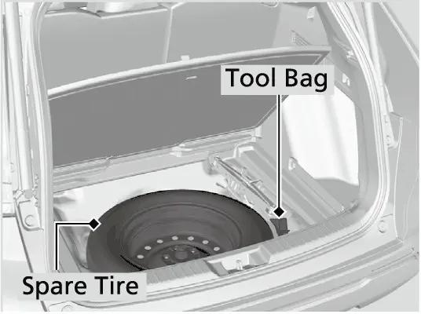
דערנאך קומט דער ספער. דרייט אויס דעם wing bolt (פליגל-שרויף) אין מיטן, נעמט אראפ דעם spacer cone (דעם קאנוס), און הייבט ארויס דעם קליינעם ספער. Honda'ס אפיציעלע ספעציפיקאציעס געבן אן אז דער EX ספער איז א T155/90D17 112M טייער. אייערע רעגולערע טייערס זענען 235/60R18 103H. דער ספער איז אסאך שמאלער און קלענער, דערפאר קומט ער מיט שטרענגע גרעניצן, וואס ווערן ערקלערט ווייטער.
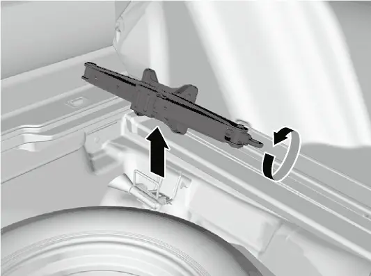
בלאקירט א ראד איידער איר הייבט אויף דעם קאר. דער מאנואל זאגט מען זאל לייגן א wheel block (ראד-בלאק) אדער א שטיין פארנט און הינטן פונעם ראד וואס איז דיאגאנאל קעגנאיבער דעם פלאטן טייער. למשל, אויב דער רעכטער פארנטיגער טייער איז פלאט, בלאקירט דעם לינקן הינטערשטן טייער פון ביידע זייטן. דערנאך לייגט דעם קליינעם ספער, מיט'ן ראד ארויף, אויף דער ערד אונטער דעם קאר'ס קערפער, נאענט צום טייער וואס איר גייט טוישן. טוט ביידע זאכן איידער דער דזשעק רירט אן דעם קאר.
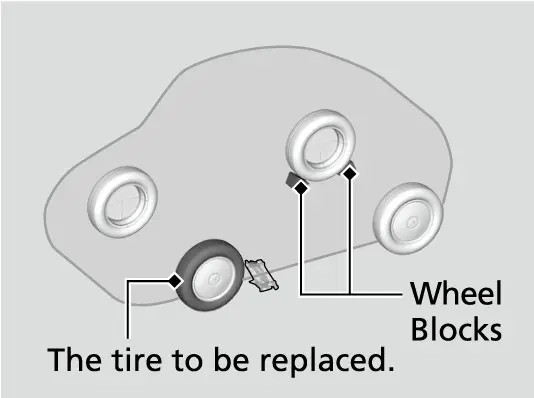
אייער EX האט 18-אינטש aluminum alloy (אלומיניום) רעדער, דערפאר קענט איר איבערהיפן די שריט פונעם מאנואל וועגן ראד-דעקלעך. יענע זענען פאר מאדעלן מיט שטאל רעדער און דעקלעך, ווי דער LX. בשעת דער קאר שטייט נאך אויף אלע פיר טייערס, לייגט אן דעם wheel nut wrench און מאכט לויז יעדע ראד-שרויף בערך איין דריי. נעמט נאך נישט אראפ די שרויפן. מאכט זיי לויז איידער מען הייבט עפעס אויף.
אויפשטעלן דעם דזשעק און אויפהייבן דעם קאר
שטעלט דעם דזשעק אונטער דעם jacking point (דזשעקינג פוינט) וואס איז די נאענטסטע צום טייער וואס איר טוישט, אזוי ווי עס ווערט געוויזן אויפן בילד אינעם מאנואל. דרייט דעם עק-בראקעט פונעם דזשעק מיטן זייגער ביז דער אויבערשטער טייל פונעם דזשעק רירט אן דעם דזשעקינג פוינט. דערנאך טשעקט אז דער טאב פונעם דזשעקינג פוינט ליגט אינעם קארב אויבן אויפן דזשעק. אויב דער טאב זיצט נישט אינעם קארב, לאזט אראפ דעם דזשעק און שטעלט אים נאכאמאל. דזשעקט קיינמאל נישט אויף קיין אנדער ארט אויפן קערפער.
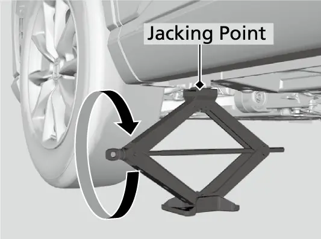
הייבט אויף דעם קאר מיט'ן jack handle bar און דעם דזשעק-הענטל ביז דער טייער הייבט זיך פונקט אפ פון דער ערד.
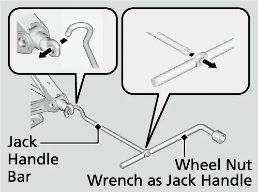
- נוצט נאר דעם דזשעק וואס איז געקומען מיט אייער קאר. אנדערע דזשעקס קענען נישט טראגן די וואג אדער פאסן נישט צום דזשעקינג פוינט.
- נוצט קיינמאל נישט דעם דזשעק ווען דער מאטאר לויפט.
- נוצט אים נאר אויף פעסטע, גלייכע ערד, און נאר ביי די דזשעקינג פוינטס.
- גייט נישט אריין אינעם קאר בשעת ער שטייט אויפן דזשעק.
- לייגט גארנישט אויבן אויף אדער אונטער דעם דזשעק.
- אויב דער דזשעק ארבעט נישט ריכטיג, הערט אויף און רופט אייער דילער אדער א פראפעסיאנעלע טאוינג סערוויס.
ארויפלייגן דעם ספער
נעמט אראפ די ראד-שרויפן און נעמט אראפ דעם פלאטן טייער. איידער דער ספער גייט ארויף, ווישט אפ די ראד-פלאכן מיט א ריינעם טוך, ווייל זאמד דארט קען שטערן דעם ראד צו זיצן גלייך. לייגט ארויף דעם קליינעם ספער. דרייט אן די ראד-שרויפן נאר ביז זיי רירן אן די ראנדן ארום די לעכער, און דערנאך הערט אויף. דאס לעצטע פעסט-אנדרייען קומט נאכדעם וואס דער קאר שטייט שוין צוריק אויף דער ערד.
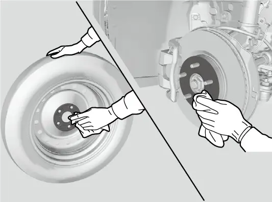
לאזט אראפ דעם קאר און נעמט אוועק דעם דזשעק. דרייט פעסט אן די ראד-שרויפן אין דעם קרייץ-סדר וואס ווערט געוויזן אויפן בילד אינעם מאנואל, גייענדיג ארום צוויי אדער דריי מאל אין דעם זעלבן סדר. דער torque (אנדריי-קראפט) פאר די ראד-שרויפן איז (m·m, 11 kgf·108 N) ft·80 lbf. דרייט נישט איבער די שרויפן דורך שטיין אויפן שליסל אדער צולייגן א רער פאר מער קראפט.
אוועקלייגן דעם פלאטן טייער
אוועקלייגן דעם פלאטן טייער און די געצייג (אלומיניום רעדער)
- נעמט אראפ דעם center cap (מיטל-דעקל) פונעם ראד פונעם פלאטן טייער.
- לייגט דעם פלאטן טייער מיטן פנים אראפ אינעם ארט פונעם ספער טייער.
- נעמט אראפ דעם spacer cone פונעם wing bolt, דרייט אים איבער, און לייגט אים צוריק אויפן שרויף.
- פארפעסטיגט דעם פלאטן טייער מיט'ן wing bolt.
- לייגט צוריק דעם wheel nut wrench און דעם jack handle bar אינעם געצייג-זעקל און לייגט אוועק דעם זעקל אינעם לאסט-פלאץ.
- לייגט צוריק דעם דזשעק אין זיין האלטער און דרייט זיין עק-בראקעט צו פארשליסן אים אויפן ארט.
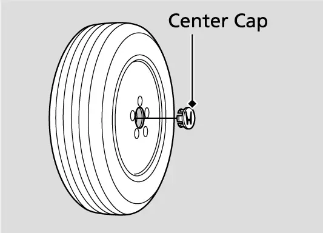
כללים פארן קליינעם ספער
גרעניצן פארן קליינעם ספער פונעם אונער'ס מאנואל
| כלל | פרטים |
|---|---|
| גיכקייט | בלייבט אונטער 50 mph (80 km/h) |
| צייט | טוישט אים וואס שנעלער מיט א רעגולערן טייער |
| לופט-דרוק | טשעקט פון צייט צו צייט; האלט ביים באשטימטן דרוק |
| פאסיגקייט | נאר פאר דעם מאדעל; נוצט אים קיינמאל נישט אויף אן אנדער קאר, און נישט קיין אנדער ספער אויף אייערן |
| קייטן | לייגט קיינמאל נישט ארויף טייער-קייטן אויפן ספער |
אויב א פארנטיגער טייער מיט קייטן ווערט פלאט, נעמט אראפ איינעם פון די רעגולערע הינטערשטע טייערס און לייגט ארויף דעם קליינעם ספער אויף זיין ארט. דערנאך לייגט דעם רעגולערן הינטערשטן טייער פארנט וואו דער פלאטער איז געווען, און לייגט אויף אים ארויף די קייטן. ווינטער-קייטן ווערן ערקלערט אין קאפיטל 24.
TPMS ווען דער ספער איז ארויפגעלייגט (U.S. מאדעלן)
ווען דער ספער איז ארויפגעלייגט, צינדט זיך אן דער low tire pressure/TPMS אינדיקאטאר (ליכטל פאר נידעריגן טייער-דרוק) בשעת'ן דרייוון. TPMS מיינט tire pressure monitoring system, דער סיסטעם וואס היט אפ דעם טייער-דרוק. נאך עטליכע מייל ווייזט דער מיטער "Tire pressure monitor system problem. Check tire pressure. See your dealer." דער אינדיקאטאר בלינקט א קורצע צייט און בלייבט דערנאך אן. דער מאנואל זאגט אז דאס איז נארמאל און מען דארף זיך נישט זארגן. ווען א רעגולערער טייער איז צוריק ארויף, טוט קאליברירן דעם TPMS און דער אינדיקאטאר לעשט זיך אויס. קאליברירן ווערט ערקלערט אין קאפיטל 16.

ווארנונג לייטס וואס פאדערן א שריט
אסאך אינדיקאטארן אויפן מיטער מיינען עפעס אנדערש ווען זיי שטייען אן ווי ווען זיי בלינקען. די פולע ליסטע פון אינדיקאטארן איז אין קאפיטל 6. די אפטיילונג באהאנדלט די וואס פאדערן א גלייכן שריט.
Low Tire Pressure/TPMS
אויב דער אינדיקאטאר שטייט אן, איז א טייער שטארק נידעריג אדער דער TPMS איז נישט קאליברירט געווארן. דרייווט פארזיכטיג, פארמייד שארפע קורוון און שטארקע ברעמזן, און שטעלט זיך אפ אויף א זיכערן ארט. שטעלט דעם לופט-דרוק לויט דעם ווערט אויפן לעיבל אויף דער ראם פון דרייווער'ס טיר, און דערנאך קאליברירט דעם TPMS. אויב דער אינדיקאטאר בלינקט בערך איין מינוט און בלייבט דערנאך אן, האט דער סיסטעם אליין א פראבלעם, דערפאר לאזט א דילער אינספעקטירן דעם טייער וואס שנעלער. אויב דער קליינער ספער איז די סיבה פאר איינעם פון די צוויי, לייגט צוריק א רעגולערן טייער און קאליברירט.
ברעמז סיסטעם אינדיקאטאר (רויט)


א רויטער ברעמז סיסטעם אינדיקאטאר וואס שטייט אן מיינט אז די ברעמז פלואיד איז נידעריג אדער דער ברעמז סיסטעם האט א פעלער. אויב ער צינדט זיך אן בשעת'ן דרייוון, דריקט לייכט אויפן ברעמז פעדאל צו פילן ווי ער איז. אויב דער פעדאל פילט זיך נארמאל, טשעקט די ברעמז פלואיד ביים נעקסטן אפשטעל. אויב ער פילט זיך נישט נארמאל, האנדלט גלייך. אויב נויטיג, שיפט אראפ כדי צו פארפאמעלעכן דעם קאר מיט'ן מאטאר-ברעמזן. אויב דער פעדאל האט בכלל נישט קיין ווידערשטאנד, שטעלט זיך גלייך אפ אויף א זיכערן ארט. דרייוון מיט נידעריגע ברעמז פלואיד איז געפערליך, דערפאר לאזט פארריכטן דעם קאר גלייך.
אויב די רויטע ברעמז ליכט און די ABS ליכט צינדן זיך אן צוזאמען, ארבעט נישט דער עלעקטראנישער סיסטעם וואס פארטיילט דעם ברעמז-קראפט. דער קאר קען ווערן אומסטאביל ביי א פלוצלינגדיגן ברעמז. לאזט אים גלייך אינספעקטירן ביי א דילער.
ווארענונגען פונעם עלעקטרישן פארקינג ברעמז
א בלינקענדיגע רויטע ברעמז ליכט ווייזט אויף א פראבלעם מיט'ן עלעקטרישן פארקינג ברעמז. פארמייד צו נוצן דעם פארקינג ברעמז און לאזט גלייך טשעקן דעם קאר ביי א דילער.
קאמבינאציעס פון די רויטע און געלע ברעמז אינדיקאטארן
| וואס איר זעט | באדייט | וואס צו טון |
|---|---|---|
| רויט און געל ביידע אן | דער פארקינג ברעמז ארבעט | נארמאל |
| וואס איר זעט | באדייט | וואס צו טון |
|---|---|---|
| רויט בלינקט, געל אן | דער פארקינג ברעמז קען נישט ארבעטן (סיסטעם טשעקט) | פארמייד דעם פארקינג ברעמז; גייט צום דילער |
| רויט בלייבט אן אדער בלינקט ווייטער מיט געל | א פעלער וואס האלט אן | שטעלט זיך אפ זיכער, שיפט אין P, לאזט עס גלייך אינספעקטירן |
| נאר רויט לעשט זיך אויס | דער פעלער בלייבט | פארמייד דעם פארקינג ברעמז; גייט צום דילער |
ווען דער רויטער אינדיקאטאר צינדט זיך אן אדער בלינקט בשעת דער געלער איז אן, זאגט דער מאנואל איר זאלט פרובירן אפלאזן דעם פארקינג ברעמז מאנועל אדער אויטאמאטיש. אויב איר לייגט אן דעם פארקינג ברעמז אין אזא מצב, קען זיין אז איר וועט אים נישט קענען נאכאמאל אפלאזן. נארמאלער באנוץ פונעם פארקינג ברעמז ווערט ערקלערט אין קאפיטל 17.
Malfunction Indicator Lamp (טשעק ענדזשין ליכט)

א טשעק ענדזשין ליכט וואס שטייט אן מיינט א פראבלעם מיט'ן עמיסיע-קאנטראל סיסטעם. פארמייד הויכע גיכקייטן און לאזט דעם קאר גלייך אינספעקטירן ביי א דילער. א בלינקענדיגע ליכט מיינט אז דער מאטאר misfri e'ט (צינדט נישט ריכטיג). פארקט אויף א זיכערן ארט ווייט פון עפעס וואס קען אנכאפן פייער, שטעלט אפ דעם מאטאר, און ווארט כאטש 10 מינוט ביז ער קילט זיך אפ. אויב די ליכט בלינקט נאכאמאל נאכן אנהייבן, פארט צום נאענטסטן דילער מיט 31 mph (50 km/h) אדער ווייניגער.
Engine Oil Pressure Low
נעמט די מעלדונג "Engine oil pressure low" (נידעריגער אויל-דרוק) זייער ערנסט. לויפן דעם מאטאר מיט נידעריגן אויל-דרוק קען כמעט גלייך גורם זיין שווערן מעכאנישן שאדן.
וואס צו טון ביי "Engine oil pressure low"
- פארקט גלייך אויף גלייכער ערד אויף א זיכערן ארט, און צינדט אן די האזארדס אויב נויטיג.
- שטעלט אפ דעם מאטאר און ווארט בערך דריי מינוט.
- עפנט די האוד, טשעקט דעם אויל-לעוועל, און גיסט צו אויל אויב נויטיג (זעט קאפיטל 3).
- הייבט אן דעם מאטאר און קוקט אויף די מעלדונג.
- אויב די ווארענונג גייט אוועק, קענט איר ווייטער פארן. אויב זי פארשווינדט נישט אין 10 סעקונדעס, שטעלט גלייך אפ דעם מאטאר און קאנטאקט א דילער.
טשארדזשינג סיסטעם און פאוער סטירינג


דער charging system אינדיקאטאר מיינט אז עס איז דא א פראבלעם מיט'ן טשארדזשן. שטעלט זיך אפ אויף א זיכערן ארט און לאזט גלייך טשעקן דעם קאר ביי א דילער. אויב איר דארפט זיך נאר אפשטעלן אויף א קורצע ווייל, לאזט דעם מאטאר לויפן, ווייל ווידער אנהייבן קען שנעל אויסליידיגן די באטעריע.
דער EPS אינדיקאטאר איז פארן עלעקטרישן פאוער סטירינג. שטעלט זיך אפ אויף א זיכערן ארט און הייבט אן דעם מאטאר פון ניי. אויב די ליכט צינדט זיך אן און בלייבט אן, לאזט דעם קאר גלייך אינספעקטירן. אויב דער מיטער ווייזט "Do not drive" (נישט דרייוון), שטעלט זיך גלייך אפ אויף א זיכערן ארט און קאנטאקט א דילער. אויב דער קאר פילט זיך אמאל ווי ער פארלירט קראפט, קוקט קודם אויפן מיטער. די ליכט אדער מעלדונג דארט זאגט אייך וועלכע פראצעדור צו פאלגן.
איבערהייצן
איבערהייצן ווייזט זיך אויף איינע פון צוויי וועגן: די מעלדונג "Engine temperature too hot. Do not drive. Allow engine to cool." ערשיינט אויפן מיטער, אדער פארע אדער שפריץ קומט ארויס פונעם מאטאר-אפטייל. ווייטער דרייוון בשעת די מעלדונג ווייזט זיך קען שעדיגן דעם מאטאר.
וואס צו טון ביים איבערהייצן
- פארקט גלייך אויף א זיכערן ארט, לעשט אויס אלע עקססעסאריס, און צינדט אן די האזארד ליכט.
- אויב עס איז נישטא קיין פארע אדער שפריץ, לאזט דעם מאטאר לויפן און עפנט די האוד.
- אויב עס איז דא פארע אדער שפריץ, לעשט אויס דעם מאטאר און ווארט ביז עס הערט אויף איידער איר עפנט די האוד.
- מיט דער האוד אפן, טשעקט אז דער קילונג-פאן דרייט זיך. שטעלט אפ דעם מאטאר ווען די מעלדונג פארשווינדט.
- אויב דער קילונג-פאן דרייט זיך נישט, שטעלט גלייך אפ דעם מאטאר.
- נאכדעם וואס דער מאטאר האט זיך אפגעקילט, טשעקט דעם קולאנט-לעוועל און קוקט אויב עס רינט ערגעץ.
- אויב דער reserve tank (רעזערוו-טאנק) איז נידעריג, גיסט צו קולאנט ביז דעם MAX צייכן.
- אויב דער רעזערוו-טאנק איז ליידיג, מאכט זיכער אז דער ראדיאטאר איז קאלט, דעקט צו די radiator cap מיט א דיקן טוך, עפנט זי, גיסט צו קולאנט ביזן אונטערשטן טייל פונעם פילער-האלדז אויב נויטיג, און לייגט צוריק די קאפ.
- ווען דער מאטאר האט זיך גענוג אפגעקילט, הייבט אים אן פון ניי. אויב די מעלדונג ערשיינט נישט, פארט ווייטער. אויב זי קומט צוריק, קאנטאקט א דילער.
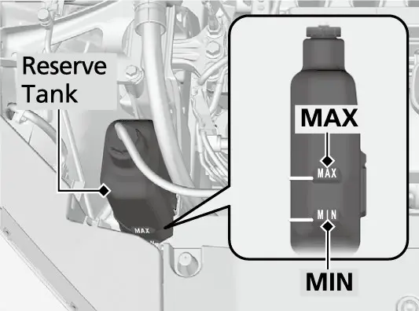
אויב דער מאטאר הייבט נישט אן
הייבט אן מיט הערן דעם סטארטער. דער ענטפער זאגט אייך וואו צו זוכן.
טשעקליסט ווען דער מאטאר הייבט נישט אן, פונעם אונער'ס מאנואל
| וואס דער סטארטער טוט | מעגליכע סיבה | וואס צו טשעקן |
|---|---|---|
| דרייט זיך נישט, אדער דרייט זיך פאמעלעך | טויטע באטעריע | מעלדונג אויפן מיטער, פיוזעס |
| דרייט זיך נארמאל, מאטאר הייבט נישט אן | פיוז אדער אן אנדער פראבלעם | אנהייב-פראצעדור, immobilizer אינדיקאטאר, בענזין-לעוועל, פיוזעס |
אויב דער סטארטער דרייט זיך נארמאל, גייט איבער די נארמאלע אנהייב-פראצעדור אין קאפיטל 6 און פרובירט נאכאמאל. דערנאך טשעקט דעם immobilizer system אינדיקאטאר (דער סיסטעם קעגן גנבה). בשעת ער בלינקט, קען דער מאטאר נישט אנהייבן. מאכט אויך זיכער אז עס איז דא גענוג בענזין און טשעקט די פיוזעס. אויב גארנישט פון דעם העלפט, לאזט טשעקן דעם קאר ביי א דילער. אויב איר מוזט גלייך אנהייבן דעם קאר, טוט אים דזשאמפן מיט א הילפס-קאר אדער א booster battery (הילפס-באטעריע). לויט דעם מצב קען אויך די נויט-אנהייב פראצעדור העלפן אויף א צייט.
שוואכע באטעריע אינעם קיילעס ריימאוט
א שוואכע ריימאוט באטעריע האט אירע אייגענע סימנים. דער ביפער קלינגט, דער מיטער ווייזט "To start, touch start button with emblem side of remote", דער ENGINE START/STOP קנעפל (אנהייב/ אפשטעל קנעפל) בלינקט, און דער מאטאר הייבט נישט אן.
אנהייבן מיט א שוואכע ריימאוט באטעריע
- דריקט דעם ENGINE START/STOP קנעפל. דער ביפער קלינגט און דער קנעפל בלינקט בערך 30 סעקונדעס.
- בשעת ער בלינקט, רירט אן די מיט פונעם קנעפל מיט דער זייט פונעם ריימאוט וואו עס שטייט דער H לאגא, מיט די קנעפלעך פונעם ריימאוט צו אייך.
- דער ביפער קלינגט און דער קנעפל בלייבט אנגעצונדן בערך 10 סעקונדעס.
- אין דער צייט, דריקט דעם ברעמז פעדאל און דריקט דעם ENGINE START/STOP קנעפל. דער מאטאר הייבט אן.
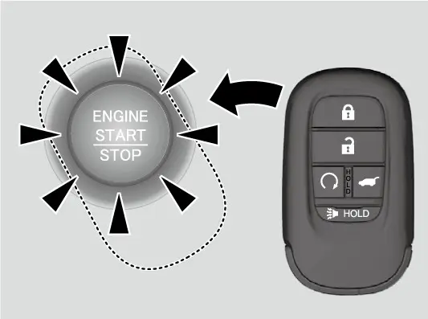
אויב איר דריקט נישט דעם ברעמז פעדאל, גייט דער קאר נאר איבער אויף ACCESSORY. טוישן די ריימאוט באטעריע ווערט ערקלערט אין קאפיטל 21.
נויט-אנהייבן דעם מאטאר
אויב דאס נארמאלע אנהייבן ארבעט נאך אלס נישט, באשרייבט דער מאנואל א נויט-אנהייב פראצעדור. נוצט עס נאר אין אן אמת'ן נויט-פאל.
נויט-אנהייב פראצעדור
- מאכט זיכער אז דער פארקינג ברעמז איז אנגעלייגט.
- באשטעטיגט אז די טראנסמישן איז אין P, דערנאך שטעלט דעם power mode אויף ACCESSORY.
- דריקט שטארק דעם ברעמז פעדאל, דערנאך דריקט און האלט דעם ENGINE START/STOP קנעפל כאטש 15 סעקונדעס.
אפילו אויב דער מאטאר הייבט אן אויף דעם אופן, זאגט דער מאנואל מען זאל עס באטראכטן אלס א סיסטעם-פעלער און גלייך לאזן טשעקן דעם קאר ביי א דילער.
דזשאמפן א טויטע 12-וואלט באטעריע
דער סדר פון די קאבלען אינעם מאנואל איז גענוי, דערפאר פאלגט עס שריט ביי שריט.
צוטשעפען די דזשאמפער קאבלען
- לעשט אויס דעם אודיא, די ליכט און אנדערע עלעקטרישע זאכן, לעשט אויס דעם מאטאר, און עפנט די האוד.
- עפנט דעם דעקל אויף דעם פאזיטיוון (+) טערמינאל פון אייער באטעריע.
- טשעפעט צו דעם ערשטן דזשאמפער קאבל צום פאזיטיוון טערמינאל פון אייער באטעריע.
- טשעפעט צו דעם אנדערן עק פון דעם קאבל צום פאזיטיוון טערמינאל פון דער booster באטעריע. נוצט נאר א 12-וואלט booster באטעריע.
- טשעפעט צו דעם צווייטן קאבל צום נעגאטיוון (-) טערמינאל פון דער booster באטעריע.
- קלעמט דעם אנדערן עק פונעם צווייטן קאבל צום engine mounting bolt (מאטאר מאונטינג באלט) וואס ווערט געוויזן אויפן בילד אינעם מאנואל, און צו גארנישט אנדערש.
- אויב איר נוצט א הילפס-קאר, הייבט אן זיין מאטאר און הייבט א ביסל אויף זיין rpm.
- פרובירט אנהייבן אייער מאטאר. אויב ער דרייט זיך פאמעלעך, טשעקט אז די קלעמערס האבן גוטן מעטאל-צו-מעטאל קאנטאקט.
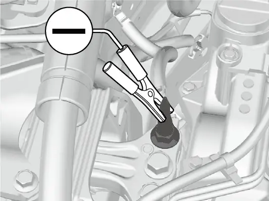
אויב איר נוצט א battery charger (באטעריע טשארדזשער) פאר קארס צו שטארקן אייער באטעריע, קלייבט אויס א טשארדזש-וואלטאזש נידעריגער פון 15 וואלט, און טשעקט דעם טשארדזשער'ס מאנואל פאר דער ריכטיגער איינשטעלונג.
קאלט וועטער שוואכט די באטעריעס און קען שטערן דעם מאטאר אנצוהייבן, דערפאר דארף מען דאס ערווארטן מער אפט אין ווינטער.
אראפנעמען די דזשאמפער קאבלען נאכדעם וואס דער מאטאר הייבט אן
| סדר | אראפנעמען |
|---|---|
| 1 | די קלעמער אויף אייער קאר'ס גראונד (engine mounting bolt) |
| סדר | אראפנעמען |
|---|---|
| 2 | דער אנדערער עק, פונעם נעגאטיוון טערמינאל פון דער booster באטעריע |
| 3 | די קלעמער אויפן פאזיטיוון טערמינאל פון אייער באטעריע |
| 4 | דער אנדערער עק, פונעם פאזיטיוון טערמינאל פון דער booster באטעריע |
דערנאך לאזט אינספעקטירן דעם קאר ביי א נאענטע סערוויס סטאנציע אדער ביי א דילער. ווען איר שטעלט דעם power mode אויף ON נאך א באטעריע פראבלעם, קענען זיך אנצינדן די VSA, געלע ברעמז סיסטעם, ACC, low tire pressure/TPMS און safety support אינדיקאטארן מיט א מעלדונג. דרייווט א קורצע שטרעקע מיט מער ווי 12 mph (20 km/h). יעדער אינדיקאטאר דארף זיך אויסלעשן. אויב איינער בלייבט אן, גייט צום דילער. באטעריע-אפהיטונג ווערט ערקלערט אין קאפיטל 20.


נויט-אפשטעלן דעם מאטאר
אין אן אמת'ן נויט-פאל קען דער ENGINE START/STOP קנעפל אפשטעלן דעם מאטאר אפילו בשעת'ן דרייוון. אדער דריקט און האלט אים בערך צוויי סעקונדעס, אדער דריקט אים שטארק דריי מאל. דער ביפער קלינגט אויב איר דריקט דעם קנעפל בשעת'ן דרייוון.
דער סטירינג וויל וועט זיך נישט פארשליסן. אבער מיט'ן מאטאר אויסגעלאשן פארלירט איר די פאוער-הילף סיי פארן סטירינג און סיי פארן ברעמזן, דערפאר נעמט דרייען און אפשטעלן אסאך מער כח און צייט. דער מאנואל זאגט מען זאל נוצן ביידע פיס אויפן ברעמז פעדאל און זיך גלייך אפשטעלן אויף א זיכערן ארט. דער קאר וועט דאן זיין אין ACCESSORY. נאכדעם וואס ער שטעלט זיך אינגאנצן אפ, שיפט אין P צו גיין איבער אויף VEHICLE OFF.
דער שיפט שטעקט אין P
אויב דער שיפט לעווער וויל זיך נישט רירן ארויס פון P, גיט דער מאנואל א פראצעדור עס צו באפרייען.
באפרייען דעם shift lock (שיפט-שלאס)
- לייגט אן דעם פארקינג ברעמז.
- שטעלט דעם power mode אויף VEHICLE OFF.
- נעמט ארויס דעם איינגעבויטן שליסל פונעם קיילעס ריימאוט.
- ווינדט ארום א טוך ארום דעם שפיץ פונעם שליסל און נוצט אים אראפצונעמען דעם דעקל איבער דעם shift lock release לעכל.
- שטופט אריין דעם שליסל אינעם לעכל.
- בשעת איר האלט דעם שליסל אינעווייניג, דריקט דעם release קנעפל פונעם שיפט לעווער און רירט דעם לעווער צו N.
דער שלאס איז יעצט באפרייט. לאזט טשעקן דעם שיפט לעווער ביי א דילער וואס שנעלער.
טשעקן און טוישן פיוזעס
אויב א עלעקטרישע זאך הערט אויף צו ארבעטן, שטעלט דעם power mode אויף VEHICLE OFF און טשעקט דעם פיוז פאר יענעם קרייז. דער CR-V האט דריי פיוז-קעסטלעך. דאס פיוז-קעסטל אינעם מאטאר-אפטייל ליגט ביי דער באטעריע; דריקט אירע טאבס עס צו עפענען. דאס interior main (הויפט) פיוז-קעסטל און דאס interior sub (נעבן) פיוז-קעסטל ליגן ביידע אונטערן דעשבארד. יעדעס קעסטל האט א טשארט מיט נומערן אינעם מאנואל. זוכט דעם נאמען פונעם קרייז, געפינט זיין נומער, און געפינט דעם פיוז אינעם קעסטל.
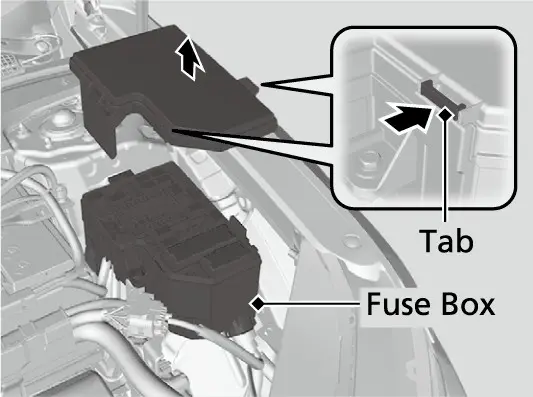
אינספעקטירן און טוישן א פיוז
- שטעלט דעם power mode אויף VEHICLE OFF און לעשט אויס די העדלייטס און אלע עקססעסאריס.
- נעמט אראפ דעם דעקל פונעם פיוז-קעסטל.
- טשעקט דעם main fuse (הויפט פיוז) אינעם קעסטל פונעם מאטאר-אפטייל דורך קוקן דורכן לאך. אויב ער איז אויסגעברענט, לאזט א דילער אים טוישן.
- טשעקט די combined fuses (צוזאמענגעשטעלטע פיוזעס) אינעם קעסטל פונעם מאטאר-אפטייל דורך קוקן אינעם שפאלט צווישן זיי. אויב איינער איז אויסגעברענט, לאזט א דילער אים טוישן.
- אינספעקטירט די קליינע פיוזעס אין די קעסטלעך פונעם מאטאר-אפטייל און פון אינעווייניג.
- ציט ארויס א אויסגעברענטן קליינעם פיוז מיט'ן fuse puller (פיוז-ציער) וואס איז צוגעקלעמט אויף דער הינטערשטער זייט פונעם דעקל פונעם מאטאר-אפטייל פיוז-קעסטל, און לייגט אריין א נייעם פיוז מיט דעם זעלבן amp rating (אמפער) וואס שטייט אויפן לעיבל.
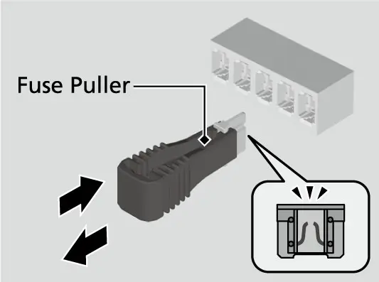
ביישפילן פון די פיוז-טשארטס אינעם מאנואל
| קרייז | קעסטל | נומער | rating |
|---|---|---|---|
| HORN | מאטאר-אפטייל | 18 | 15 A |
| HAZARD | מאטאר-אפטייל | 23 | 10 A |
| P/W DR (דרייווער'ס עלעקטרישער פענצטער) | אינעווייניג main | 1 | 20 A |
| FR ACC SOCKET (פארנטיגער עקססעסארי סאקעט) | אינעווייניג main | 9 | 20 A |
| DOOR LOCK | אינעווייניג main | 10 | 20 A |
| METER | אינעווייניג main | 11 | 10 A |
דער main fuse איז 150 A און מען דארף אים לאזן נאר ביים דילער. טייל ערטער אין די טשארטס זענען אנגעצייכנט אז זיי זענען נישט אויף אלע מאדעלן. אויב א פיוז קוקט אויס אנדערש ווי אינעם טשארט, לאזט עס פארן דילער.
שלעפן א קאליע'נעם CR-V
אויב מען קען נישט דרייוון דעם קאר, רופט א פראפעסיאנעלע טאוינג סערוויס. א fal tbed טראק (פלאכער טראק) איז דער בעסטער אופן. נאר פאר 2WD מאדעלן, נעמט דער מאנואל אויך אן א wheel-lift טראק, וואס זיינע צוויי דרייענדיגע ארעמס הייבן אויף די פארנטיגע טייערס בשעת די הינטערשטע טייערס בלייבן אויף דער ערד, אבער נאר ווען דער פארקינג ברעמז איז אפגעלאזט. אויב דער פארקינג ברעמז לאזט זיך נישט אפ, אדער אייער EX האט AWD, בעט א fal tbed.
- שלעפט קיינמאל נישט נאר מיט א שטריק אדער קייט. ביידע קענען זיך רירן פון זייט צו זייט אדער פלאצן.
- הייבט אדער שלעפט קיינמאל נישט דעם קאר ביי די באמפערס. זיי זענען נישט געמאכט צו טראגן זיין וואג.
- שלעפט אים קיינמאל נישט הינטער א motorhome אדער אן אנדער קאר. דאס קען שעדיגן די טראנסמישן.
רעזערוו-וועגן פאר דער בענזין-טיר און טעילגעיט
די בענזין-טיר וויל זיך נישט אנלאקן
אויב די fuel fill door (בענזין-טירל) וויל זיך נישט אנלאקן, עפנט דעם טעילגעיט און נעמט אראפ דעם דעקל וואס ווערט געוויזן אויפן בילד אינעם מאנואל. הינטער אים איז דא א release שנור. ציט אים אזוי ווי געוויזן, און די בענזין-טיר עפנט זיך אזוי אז איר קענט אנפילן בענזין נארמאל (זעט קאפיטל 4). דערנאך קאנטאקט א דילער צו טשעקן דעם קאר.
דער טעילגעיט וויל זיך נישט עפענען
אויב דער מאנועלער טעילגעיט וויל זיך נישט עפענען, קענט איר אים עפענען פון אינעווייניג פונעם לאסט-פלאץ. ווינדט איין א פלאכן שרויבנציער אין א טוך כדי ער זאל גארנישט פארקראצן, און נעמט אראפ דעם דעקל אויף דער אינעווייניגסטער זייט פונעם טעילגעיט. שטופט דעם לעווער אויף רעכטס מיט'ן שרויבנציער בשעת איר שטופט דעם טעילגעיט אפן. איידער איר שטופט, מאכט זיכער אז עס איז דא פלאץ הינטער'ן קאר און אז דער טעילגעיט וועט נישט אנקלאפן אין קיינעם און אין גארנישט. דערנאך לאזט א דילער עס טשעקן.
אפטע פראגעס
פראגע: ווי שנעל און ווי ווייט קען איך דרייוון אויפן קליינעם ספער?
ענטפער: האלט די גיכקייט אונטער 50 mph (80 km/h) און טוישט דעם ספער מיט א רעגולערן טייער וואס שנעלער. דער מאנואל גיט נישט קיין גרעניץ אויף דער ווייטקייט.
פראגע: די TPMS ליכט האט זיך אנגעצונדן נאכדעם וואס איך האב ארויפגעלייגט דעם ספער. איז עפעס נישט אין ארדענונג?
ענטפער: ניין. ביי U.S. מאדעלן איז דאס נארמאל ווען דער ספער איז ארויפגעלייגט. לייגט צוריק א רעגולערן טייער און קאליברירט דעם TPMS, און די ליכט לעשט זיך אויס.
פראגע: קען איך ווייטער דרייוון מיט א בלינקענדיגע טשעק ענדזשין ליכט?
ענטפער: נישט גלייך. פארקט זיכער, שטעלט אפ דעם מאטאר און ווארט כאטש 10 מינוט. אויב זי בלינקט נאכאמאל נאכן אנהייבן, פארט צום נאענטסטן דילער מיט 31 mph אדער ווייניגער.
פראגע: וואו גייט די לעצטע קלעמער פונעם דזשאמפער קאבל?
ענטפער: נאר אויפן engine mounting bolt וואס ווערט געוויזן אויפן בילד אינעם מאנואל, קיינמאל נישט אויפן נעגאטיוון טערמינאל פון אייער באטעריע אדער אויף קיין אנדער טייל.
פראגע: מיין AWD EX דארף שלעפן. קען א wheel-lift טראק אים נעמען?
ענטפער: ניין. דער מאנואל נעמט אן wheel-lift שלעפן נאר פאר 2WD מאדעלן. בעט א fal tbed טראק.
פראגע: זאל איך אויסלעשן דעם מאטאר אויב די טשארדזשינג ליכט צינדט זיך אן?
ענטפער: שטעלט זיך אפ זיכער און גייט גלייך צו א דילער. ביי א קורצן אפשטעל, לאזט דעם מאטאר לויפן, ווייל ווידער אנהייבן קען שנעל אויסליידיגן די באטעריע.
די הויפט פונקטן
- שטעלט זיך אפ זיכער און צינדט אן די האזארד ליכט איידער איר טוט עפעס אנדערש.
- גייט קיינמאל נישט אונטער א קאר וואס ווערט געהאלטן נאר דורכן דזשעק, און נוצט נאר דעם פאבריק-דזשעק ביי די דזשעקינג פוינטס.
- דרייט אן די ראד-שרויפן צו ft·80 lbf אין א קרייץ-סדר, און בלייבט אונטער 50 mph אויפן ספער.
- א ליכט וואס שטייט אן און א ליכט וואס בלינקט מיינען פארשידענע זאכן; א בלינקענדיגע טשעק ענדזשין ליכט מיינט: גלייך אפשטעלן.
- "Engine oil pressure low" מיינט גלייך פארקן; א ווארענונג וואס האלט איבער 10 סעקונדעס נאכן אנהייבן מיינט: רופט א דילער.
- עפנט קיינמאל נישט די האוד בשעת עס קומט ארויס פארע, און נעמט נישט אראפ א הייסע radiator cap.
- פאלגט גענוי דעם סדר פון די דזשאמפער קאבלען אינעם מאנואל און מאכט גראונד נאר אויפן engine mounting bolt.
- נוצט א fal tbed צו שלעפן אן AWD קאר, און שלעפט קיינמאל נישט מיט א שטריק, קייט אדער ביי די באמפערס.